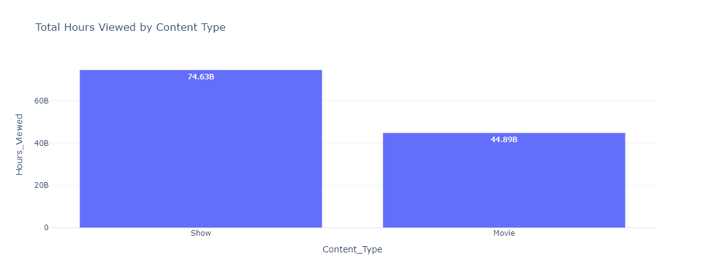
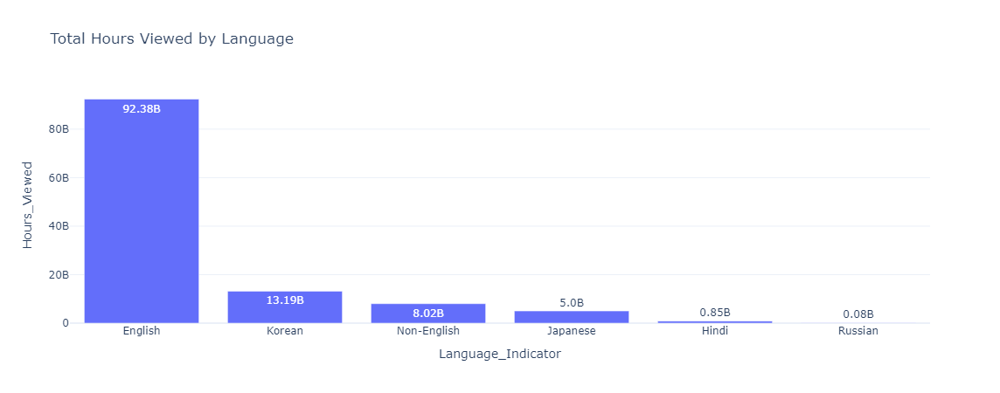
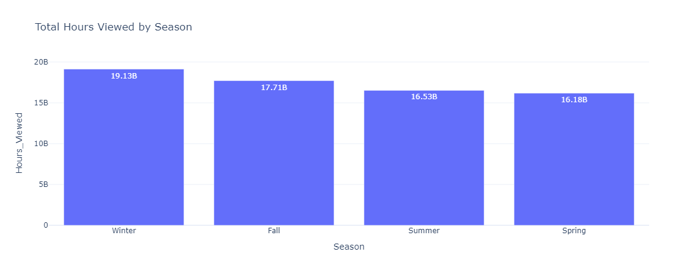
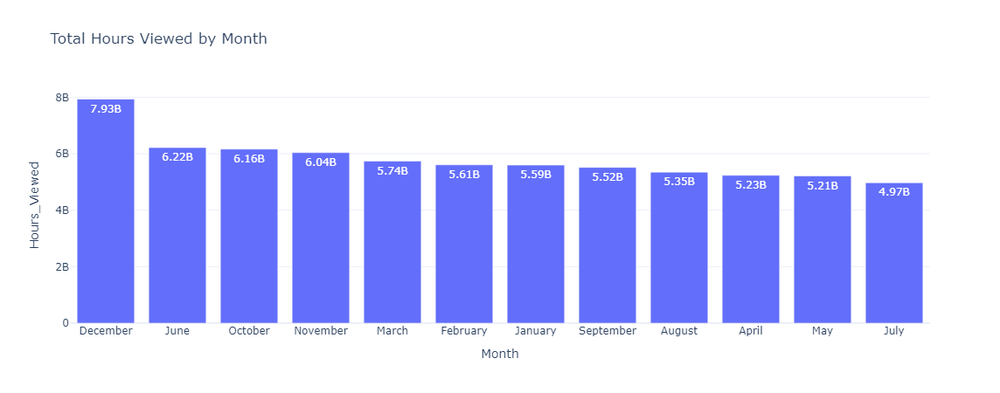
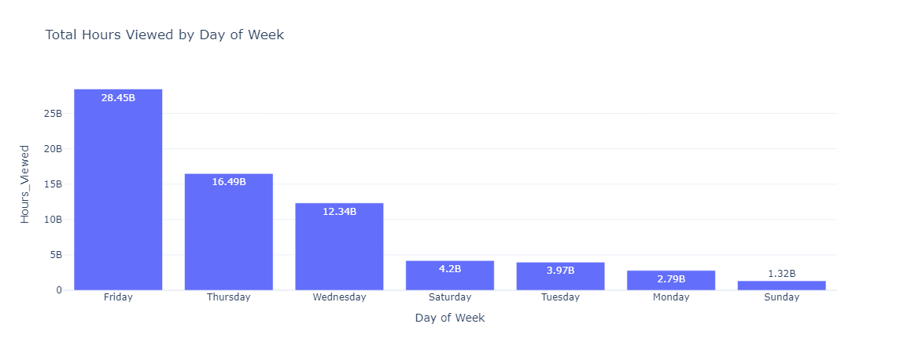

Netflix Content Strategy Analysis
Understanding What People Watch to Make Better Content Choices
Overview
Conducted a detailed analysis of Netflix content viewership data for 2023 to determine optimal content types. Examined total hours viewed, growth rates, and patterns including seasonal, monthly, and weekly viewership. Aims to enhance content strategies for Netflix to boost viewership.
Dataset Details
- Total Records: 24,812
- After Cleaning: 19,158 (removed duplicates, nulls, invalid values)
Tools Used
- Pandas: Data cleaning and analysis
- Plotly: Bar charts and line plots
Analysis and Results
1. Total Hours Viewed by Content Type
- Shows: 74.63 billion hours
- Movies: 44.89 billion hours

Insight: Shows outperform Movies in viewership. Recommend prioritizing development of engaging Shows.
2. Total Hours Viewed by Language
- English: 92.38B
- Korean: 13.19B
- Non-English: 8.02B
- Japanese: 5.00B
- Hindi: 0.85B
- Russian: 0.08B

Insight: English content dominates. Suggest increased investment in English and Korean content.
3. Growth Rate Analysis
English and Korean content exhibited highest growth rates (2015–2023).
Insight: Rising popularity indicates sustained production in English and Korean.
4. Seasonal Viewership Analysis
- Winter: 19.13B
- Fall: 17.71B
- Summer: 16.53B
- Spring: 16.18B

Insight: Winter yields highest viewership. Propose major releases in Winter.
5. Monthly Viewership Analysis
- Top: December (7.93B), June (6.22B)
- Bottom: May (5.22B), July (4.98B)

Insight: December peaks. Schedule big releases in December and June.
6. Weekly Viewership Analysis
- Friday: 28.45B
- Thursday: 16.49B
- Wednesday: 12.34B
- Saturday: 4.20B
- Tuesday: 3.98B
- Monday: 2.80B
- Sunday: 1.32B

Insight: Friday is optimal for new releases due to weekend engagement.
Assumptions and Limitations
- Analysis uses
release_date for timing-based insights, not actual viewing timestamps.
- Limited by lack of viewer metadata (genre, country, age, device, etc.).
Plan to perform Content Strategy Analysis V2 with enhanced datasets.
Key Takeaways for Content Strategy
- Focus on Shows for higher viewership.
- Invest in English and Korean content.
- Schedule major releases in Winter, especially December.
- Launch content on Fridays for peak audience capture.
Future Steps
Will source additional data (genre, location, daily views) to enhance analysis in upcoming version.
Author

Pavan Yellathakota
Date: MAR 2025
Contact Information